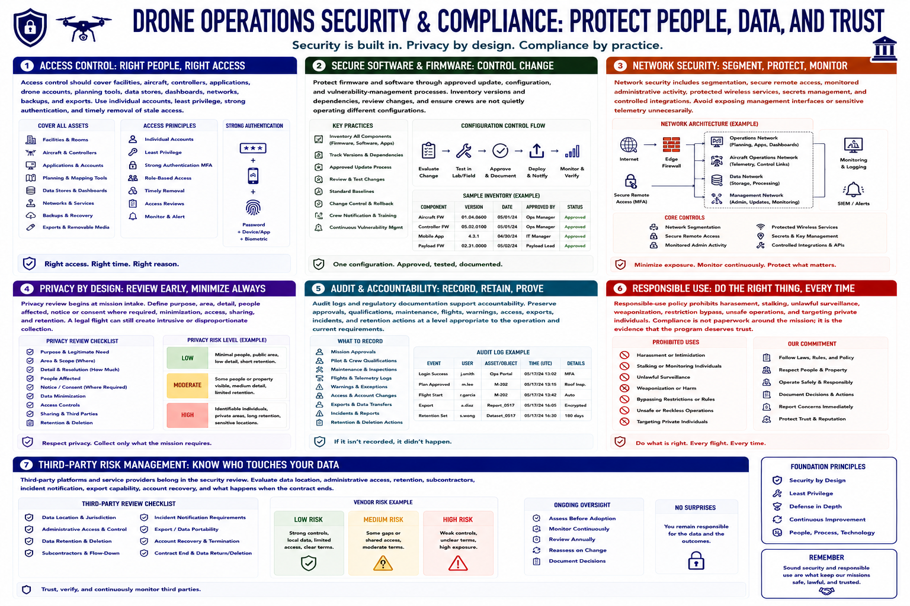

Security, Privacy, and Compliance
Connecting to LMS... Progress: in progress

Narration
Access control should cover facilities, aircraft, controllers, applications, drone accounts, planning tools, data stores, dashboards, networks, backups, and exports. Use individual accounts, least privilege, strong authentication, and timely removal of stale access.
Protect firmware and software through approved update, configuration, and vulnerability-management processes. Inventory versions and dependencies, review changes, and ensure crews are not quietly operating different configurations.
Network security includes segmentation, secure remote access, monitored administrative activity, protected wireless services, secrets management, and controlled integrations. Avoid exposing management interfaces or sensitive telemetry unnecessarily.
Privacy review begins at mission intake. Define purpose, area, detail, people affected, notice or consent where required, minimization, access, sharing, and retention. A legal flight can still create intrusive or disproportionate collection.
Audit logs and regulatory documentation support accountability. Preserve approvals, qualifications, maintenance, flights, warnings, access, exports, incidents, and retention actions at a level appropriate to the operation and current requirements.
Responsible-use policy prohibits harassment, stalking, unlawful surveillance, weaponization, restriction bypass, unsafe operations, and targeting private individuals. Compliance is not paperwork around the mission; it is the evidence that the program deserves trust.
Third-party platforms and service providers belong in the security review. Evaluate data location, administrative access, retention, subcontractors, incident notification, export capability, account recovery, and what happens when the contract ends.